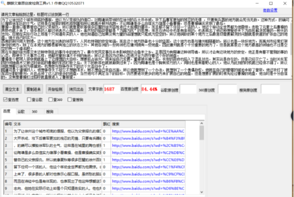

《三国演义》曹操占徐州想要谋发展，以报父仇为借口，大肆屠杀徐州军及百姓
曹操在占领徐州后，为了让徐州这个城市彻底的慑服，他以为父亲报仇的借口，对陶谦所带领的在徐州的兵大开杀戒，攻下后曹军更加的残忍的无情 ，只要有兵器的地方就会死伤无数。这种方式，的确可以摧毁徐军队的士气，这样是在城里的陶也感到害怕所以就离开郴州逃跑。不论陶谦是多么自信实力雄厚小看曹操，但是曹操确实笑到了最后。
曹操一直借口着要替自己的父亲报仇，所以就对徐州百姓进行大规模的屠杀，而且都不留下任何一个活的人，他这个举动全世界都为他震惊。击败了元素之后曹操的声势也就上来了，很多县的人都对他表示心服口服。虽然愁的脑袋里都是“为国为民”的思想，而且在诗经中也是有体现的，也表现出了他这种想爱逆天下为百姓解决苦难的一种大的志向，但她在实际行动上却是个只知道务实的人。他也知道自己如果没有力量的话理想就只能成为空空的，所以他铜龄的某个地方之后最急切需要解决的问题就是快速的扩张自己的地盘，强大自己的实力。
西南的荆州地大物博，这个地方在刘表的领导下，人民也特别的安定和谐，而且这个地方防备也十分的坚固，这个地方也是与豫州相隔着的，所以也是一块好地方，而禹州市经常打架争夺的地方，除了在本地方的郡县都有独立的状态之外，其他各洲的一些将领也在豫州拥有一些地盘，因此豫州就是个十分重要的地方了，但是就算是这个地方最高的领袖也不过是空空的有一个虚名吧。
而在东面的徐州是汉末这种特别乱的事件中的地方了，黄巾党民变事件并未影响到这会鱼米之乡，正是因为有陶谦这种领导者，所以才会有这块地方的安定，他正是有着不管别的事的心态，即使天下大事怎么样，他都尽量扮演不干预的角色，所以正是因为这种心态他才全力防守着这个好的地盘。
曹操是个聪明人很快她就看上了这理想的大目标，想要抢占徐州，用来给自己发展。董卓被杀掉之后，长安的政府也陷入了混乱状态，其实说是存在的，但是已经灭亡了。当时关东军团的领袖袁术又被这时新起的曹操的军团打败之后，天下的秩序也就被颠倒过来了，因为陶谦也是个胸有成竹的人，同时也是有着野心的人，他认为此刻的时机就已经很不错了，所以他就想着以徐州为根据地，也想参与到争夺天下的这个大活动中了。
陶谦可是个谨慎的人，他想争夺天下却又不想趟浑水，她不想自己亲自出面，所以他就想到了一个办法，就想到了一个傀儡政权，他就在自己的管辖的城池中称了皇帝，他还攻打了被军团分割的青州，并且占领了这儿的很多的地盘，当然他可不满足当下的目标，仍然要进攻更多的地方来扩展自己的地盘，但是想要扩展的时候先经过曹操的地盘，他当时是十分自信的，没有像曹操打过招呼就直接进入了曹那里。
因为曹操已经和元素打了很久的仗了，所以曹操就想让自己的兵休息休息，所以没有暂时理会陶谦的攻击，只是守了几个重要的地方，而且还故意让出了一个地方让陶谦自由的进出，等过了很久之后从军休息好了，曹就采取行动，采用围魏救赵的策略直接攻打了徐州。因为当时陶率领的主力军团正在外面所以徐州的首位的军军队很缺乏作战经验，这样一波操作，曹攻下十个多城，陶听到消息，立马赶回来了，然后进行一系列部署，准备大干一场了。
长期守着徐州的陶，他不知道别人的情况，也不知道自己的情况，而且自己的军队多是农民，对于骑马这种绝活来说，更是不擅长，但是，曹军的人却和陶的相反的，而且曹操也擅长指挥骑兵作战了，所以对于陶来说，现在的曹操是具有威胁性的，摧毁力十足，所以这个战争没有打就知道结果了。
曹的人特别凶猛的就朝着这块富裕的土地扑去了，此刻的徐州的军手持着短的兵器，而且更是缺乏动力，所以结果可想而知，徐军死伤大概一万多人，尸体把河都堵塞了，想想就挺可怕的，陶撤退到东，领地也就失去一半了。
小编认为其实曹操早就看上了的这块土地就一直想把它作为自己发展前途的基地，以自己父亲的仇为借口，还不如说是扩充自己的地方，强大自己的力量。助长徐的骄傲，而且这样做也可以让曹操在陶谦的眼中没有太大的妨碍，这样就可以让曹操在私底下养精蓄锐，到关键时刻再发动攻击，陶谦现在后悔也来不及了，在古代这样严峻的形式下不论是哪一个不出色的人物，应该将其关注起来，否则的话就会给自己带来灾。